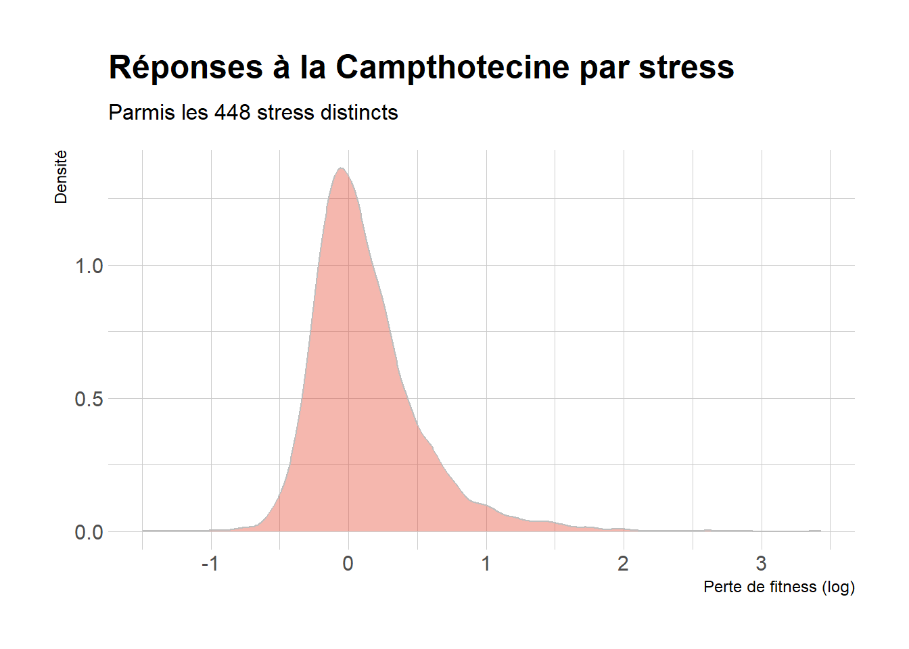

Chapter 4 Réponse à la Camptothecine
library(tidyr)
library(stringr)
library(FactoMineR)
library(ggplot2)4.1 Réponse des mutants à CPT
cpt = data.frame(ORF = d_merge$ORF, Reponse_cpt = d_merge$camptothecin_500um)
ggplot(cpt) +
aes(x = Reponse_cpt) +
theme_classic()+
geom_histogram(aes(y = after_stat(density)), color = "grey", fill = "lightblue") +
geom_density(color = "grey", fill = "#F85700", alpha = 0.3)
cpt$ORF[cpt$Reponse_cpt > 2.5] %>% length()## [1] 4cpt$ORF[cpt$Reponse_cpt > 2] %>% length()## [1] 8cpt$ORF[cpt$Reponse_cpt > 1.5] %>% length()## [1] 43cpt$ORF[cpt$Reponse_cpt < -1] %>% length()## [1] 3cpt$ORF[cpt$Reponse_cpt < -.8] %>% length()## [1] 6cpt$ORF[cpt$Reponse_cpt < -.7] %>% length()## [1] 13cpt$ORF[cpt$Reponse_cpt < -.6] %>% length()## [1] 24cpt$ORF[cpt$Reponse_cpt < -.5] %>% length()## [1] 614.2 GO enrichissement
En utilisant https://yeastgenome.org/goTermFinder, on regarde si le groupe des gènes dont la mutation entraine une plus grande sensibilité à cpt est enrichis par rapport au génome ebntier dans certaines fonctions moléculaire, localisations cellulaires ou processus biologiques :
4.2.1 Mutants les plus resistants à CPT
# les 43 plus resistant à cpt
write.table(data.frame(ORF = d_merge$Gene, Reponse_cpt = d_merge$camptothecin_500um)$ORF[cpt$Reponse_cpt > 1.5], file = "data/gene_15.txt", row.names = FALSE, quote = FALSE)rien de ouf, marche pas trop
4.2.2 Mutants les plus sensibles à CPT
4.2.2.1 Les 61 plus sensibles
# les 61 plus sensible à cpt
write.table(data.frame(ORF = d_merge$Gene, Reponse_cpt = d_merge$camptothecin_500um)$ORF[cpt$Reponse_cpt < -.5], file = "data/gene_-5.txt", row.names = FALSE, quote = FALSE)tmp = read.table("data/go/61_process.txt", sep = "\t", header = TRUE)
tmp = data.frame(Term = tmp$TERM, p_value = tmp$CORRECTED_PVALUE, FDR = tmp$FDR_RATE, Gene = tmp$ANNOTATED_GENES)
knitr::kable(tmp, caption = "Biological Process")| Term | p_value | FDR | Gene |
|---|---|---|---|
| metabolic process | 0.0010175 | 0.00% | HAL5, IFM1, HSM3, RPL5, RVB2, TRM112, CSL4, REC107, RPL16B, MRPL6, PRP11, SNP1, RPS1A, VAM3, MRPL20, ARP5, SMD2, BUB1, MCM5, COX5A, SPP41, DFM1, GFA1, STE14, RRP9, RPL6B, HRD3, NRG2, ARO9, RPS29B, ISA2, PDC6, YEF3, RLP7, CDC8, RPL19A, POP2, RPL43A, MOD5, SRB7, RPB8, MRPL37, THS1, SKI6, FPK1, GAL7, SPT6, BSC5, CIT1, ALG12, UTP14, FIS1, RPL30 |
| macromolecule metabolic process | 0.0018761 | 0.00% | ALG12, BSC5, SPT6, UTP14, RPL30, MOD5, SRB7, THS1, MRPL37, RPB8, FPK1, SKI6, RLP7, YEF3, RPL43A, POP2, RPL19A, RPS29B, ISA2, DFM1, RRP9, GFA1, STE14, RPL6B, NRG2, HRD3, ARP5, MRPL20, BUB1, MCM5, SMD2, SPP41, CSL4, RPL16B, REC107, PRP11, MRPL6, RPS1A, SNP1, HAL5, HSM3, IFM1, TRM112, RPL5, RVB2 |
| primary metabolic process | 0.0024242 | 0.00% | COX5A, ARP5, MRPL20, BUB1, MCM5, SMD2, RPL6B, NRG2, HRD3, DFM1, GFA1, STE14, RRP9, RPL5, RVB2, TRM112, HAL5, IFM1, HSM3, MRPL6, PRP11, RPS1A, SNP1, CSL4, REC107, RPL16B, RPB8, THS1, MRPL37, FPK1, SKI6, MOD5, SRB7, UTP14, RPL30, GAL7, SPT6, CIT1, ALG12, BSC5, RPS29B, ISA2, PDC6, ARO9, CDC8, POP2, RPL19A, RPL43A, RLP7, YEF3 |
| gene expression | 0.0025560 | 0.00% | IFM1, TRM112, RPS29B, RPL5, RVB2, ISA2, CSL4, YEF3, RPL16B, RLP7, PRP11, MRPL6, SNP1, RPS1A, RPL43A, RPL19A, POP2, MRPL20, ARP5, MOD5, SMD2, MCM5, SRB7, MRPL37, SPP41, THS1, RPB8, SKI6, RRP9, SPT6, STE14, RPL6B, UTP14, RPL30, NRG2 |
| organic substance metabolic process | 0.0033974 | 0.00% | RPB8, THS1, MRPL37, FPK1, SKI6, MOD5, SRB7, UTP14, RPL30, GAL7, SPT6, CIT1, ALG12, BSC5, RPS29B, ISA2, PDC6, ARO9, CDC8, POP2, RPL19A, RPL43A, RLP7, YEF3, COX5A, SPP41, ARP5, MRPL20, BUB1, MCM5, SMD2, RPL6B, HRD3, NRG2, DFM1, GFA1, STE14, RRP9, RPL5, RVB2, TRM112, HAL5, IFM1, HSM3, MRPL6, PRP11, RPS1A, SNP1, CSL4, REC107, RPL16B |
| nitrogen compound metabolic process | 0.0035272 | 0.00% | RRP9, GFA1, STE14, DFM1, NRG2, HRD3, RPL6B, MCM5, BUB1, SMD2, ARP5, MRPL20, COX5A, RPL16B, REC107, CSL4, RPS1A, SNP1, PRP11, MRPL6, HSM3, IFM1, HAL5, TRM112, RVB2, RPL5, ALG12, BSC5, SPT6, RPL30, UTP14, SRB7, MOD5, FPK1, SKI6, THS1, MRPL37, RPB8, RLP7, YEF3, RPL43A, POP2, RPL19A, CDC8, ARO9, PDC6, ISA2, RPS29B |
| cellular metabolic process | 0.0054347 | 0.00% | RPS1A, VAM3, SNP1, MRPL6, PRP11, REC107, RPL16B, CSL4, RVB2, RPL5, TRM112, IFM1, HSM3, HAL5, NRG2, HRD3, RPL6B, GFA1, STE14, RRP9, DFM1, COX5A, BUB1, MCM5, SMD2, ARP5, MRPL20, POP2, RPL19A, RPL43A, CDC8, RLP7, YEF3, ISA2, PDC6, RPS29B, ARO9, RPL30, FIS1, UTP14, SPT6, CIT1, ALG12, BSC5, FPK1, SKI6, RPB8, THS1, MRPL37, SRB7, MOD5 |
tmp = read.table("data/go/61_function.txt", sep = "\t", header = TRUE)
tmp = data.frame(Term = tmp$TERM, p_value = tmp$CORRECTED_PVALUE, FDR = tmp$FDR_RATE, Gene = tmp$ANNOTATED_GENES)
knitr::kable(tmp, caption = "Molecular Function")| Term | p_value | FDR | Gene |
|---|---|---|---|
| structural constituent of ribosome | 0.0000397 | 0.00% | RPL43A, MRPL20, MRPL37, MRPL6, RPL19A, RPL5, RLP7, RPL30, RPS1A, RPL16B, RPL6B, RPS29B |
| structural molecule activity | 0.0067415 | 2.00% | RPS29B, RPL6B, RPL30, RPL16B, RPS1A, RLP7, RPL5, RPL19A, MRPL6, MRPL37, MRPL20, RPL43A |
| binding | 0.0076213 | 1.33% | YEF3, IFM1, RPL30, CDC25, CCT4, CDC8, THS1, RPS29B, FPK1, RVS167, POP2, UTP14, GFA1, MRPL6, MCM5, HAL5, TRM112, RRP9, MOD5, DFM1, SKI6, SYT1, ARO9, PDC6, PRP11, RPL5, RPL19A, ARP3, RPL16B, CSL4, VAM3, SPT6, SNP1, RLP7, NRG2, RPL6B, ISA2, SMD2, RVB2, HSM3, BUB1, SRB7, GAL7, RPB8, RPL43A |
tmp = read.table("data/go/61_component.txt", sep = "\t", header = TRUE)[c(1:10),]
tmp = data.frame(Term = tmp$TERM, p_value = tmp$CORRECTED_PVALUE, FDR = tmp$FDR_RATE, Gene = tmp$ANNOTATED_GENES)
knitr::kable(tmp, caption = "Cellular Component")| Term | p_value | FDR | Gene |
|---|---|---|---|
| ribosome | 0.0000354 | 0.00% | YEF3, MRPL37, RPL43A, MRPL20, RPL19A, RPL16B, RPS29B, MRPL6, RLP7, RPL6B, RPL30, RPL5, RPS1A |
| large ribosomal subunit | 0.0000387 | 0.00% | RPL16B, RPL30, RPL5, MRPL6, RLP7, RPL6B, MRPL37, RPL43A, MRPL20, RPL19A |
| ribosomal subunit | 0.0000983 | 0.00% | RPL19A, RPL43A, MRPL20, MRPL37, MRPL6, RPS29B, RPL16B, RPL6B, RLP7, RPL5, RPS1A, RPL30 |
| macromolecular complex | 0.0001199 | 0.00% | SNP1, RPS1A, RPL5, UTP14, VAM3, COX5A, RPL30, BUB1, ARP3, SKI6, MCM5, POP2, CCT4, RLP7, MRPL6, SMD2, SRB7, HRD3, TRM112, RPS29B, RPL43A, MRPL37, YEF3, ARP5, RVS167, CSL4, PRP11, RVB2, RPL6B, NRG2, DFM1, RRP9, BSC5, RPL16B, RPL19A, MRPL20, RPB8, SPT6 |
| cytosolic ribosome | 0.0001384 | 0.00% | RPL43A, RPL19A, RLP7, YEF3, RPL6B, RPS1A, RPL5, RPL30, RPL16B, RPS29B |
| non-membrane-bounded organelle | 0.0003751 | 0.00% | SPT6, RPB8, MRPL20, RPL19A, RPL16B, MOD5, RRP9, RPL6B, RVB2, CSL4, REC107, RVS167, ARP5, YEF3, MRPL37, RPL43A, TRM112, RPS29B, MRPL6, RLP7, POP2, SKI6, MCM5, ARP3, BUB1, RPL30, UTP14, RPL5, RPS1A |
| intracellular non-membrane-bounded organelle | 0.0003751 | 0.00% | RPL30, UTP14, RPL5, RPS1A, RLP7, POP2, SKI6, MCM5, ARP3, BUB1, TRM112, RPS29B, MRPL6, ARP5, YEF3, MRPL37, RPL43A, REC107, RVS167, RPL6B, RVB2, CSL4, RPL16B, RRP9, MOD5, SPT6, RPB8, MRPL20, RPL19A |
| cytosolic part | 0.0005134 | 0.00% | RPS1A, RPL5, RPL16B, RPL30, RPS29B, RPL43A, RPL19A, RLP7, YEF3, RPL6B, CCT4 |
| intracellular ribonucleoprotein complex | 0.0014082 | 0.22% | RPL19A, RPL43A, MRPL20, MRPL37, YEF3, SMD2, MRPL6, RRP9, RPS29B, RPL16B, PRP11, RPL6B, POP2, RLP7, RPL5, RPS1A, SNP1, UTP14, RPL30 |
| intracellular organelle part | 0.0014617 | 0.20% | RRP9, SYT1, RPL16B, MRPL20, REC107, NRG2, DFM1, RPL6B, CDC25, SRB7, MRPL6, SMD2, STE14, TRM112, RPL43A, RPS1A, RPL5, COX5A, ARP3, BUB1, RLP7, MCM5, MOD5, RPL19A, SPT6, ALG12, RPB8, OM45, RVS167, RVB2, PRP11, CSL4, HRD3, ISA2, CIT1, RPS29B, ARP5, MRPL37, SNP1, RPL30, VAM3, FIS1, UTP14, SKI6 |
4.2.3 Les 24 plus sensibles
# les 24 plus senssible à cpt
write.table(data.frame(ORF = d_merge$Gene, Reponse_cpt = d_merge$camptothecin_500um)$ORF[cpt$Reponse_cpt < -.6], file = "data/gene_-6.txt", row.names = FALSE, quote = FALSE)tmp = read.table("data/go/24_process.txt", sep = "\t", header = TRUE)
tmp = data.frame(Term = tmp$TERM, p_value = tmp$CORRECTED_PVALUE, FDR = tmp$FDR_RATE, Gene = tmp$ANNOTATED_GENES)
knitr::kable(tmp, caption = "Biological Process")| Term | p_value | FDR | Gene |
|---|---|---|---|
| ribonucleoprotein complex biogenesis | 0.0020432 | 2.00% | RPL30, SMD2, TRM112, RVB2, RPL16B, SKI6, RPB8, PRP11, RPS1A, RPL6B |
| RNA processing | 0.0066931 | 1.00% | RPL16B, PRP11, SKI6, RPL30, SMD2, TRM112, RVB2, RPS1A, MOD5, SPT6 |
tmp = read.table("data/go/24_function.txt", sep = "\t", header = TRUE)
tmp = data.frame(Term = tmp$TERM, p_value = tmp$CORRECTED_PVALUE, FDR = tmp$FDR_RATE, Gene = tmp$ANNOTATED_GENES)
knitr::kable(tmp, caption = "Molecular Function")| Term | p_value | FDR | Gene |
|---|---|---|---|
| structural constituent of ribosome | 0.0042054 | 4.00% | RPL16B, RPL43A, RPL30, RPS1A, RPL6B, MRPL20 |
| binding | 0.0050341 | 3.00% | RPL6B, MOD5, BUB1, RVB2, VAM3, RPL43A, RPL30, RPB8, ARO9, PRP11, SKI6, IFM1, CCT4, TRM112, HSM3, DFM1, SPT6, PDC6, CDC25, SMD2, RPL16B |
tmp = read.table("data/go/24_component.txt", sep = "\t", header = TRUE)
tmp = data.frame(Term = tmp$TERM, p_value = tmp$CORRECTED_PVALUE, FDR = tmp$FDR_RATE, Gene = tmp$ANNOTATED_GENES)
knitr::kable(tmp, caption = "Cellular Component")| Term | p_value | FDR | Gene |
|---|---|---|---|
| large ribosomal subunit | 0.0060034 | 0.00% | RPL43A, RPL30, RPL16B, RPL6B, MRPL20 |
| cytosolic part | 0.0062126 | 0.00% | RPL30, RPL43A, RPL16B, RPL6B, CCT4, RPS1A |
| macromolecular complex | 0.0063399 | 0.00% | RPL43A, RPL16B, RPB8, RPL6B, DFM1, VAM3, TRM112, RVB2, RPL30, BUB1, PRP11, SPT6, MRPL20, CCT4, RPS1A, SKI6, SMD2 |
| ribosomal subunit | 0.0074783 | 0.00% | RPL30, RPS1A, RPL6B, RPL16B, RPL43A, MRPL20 |